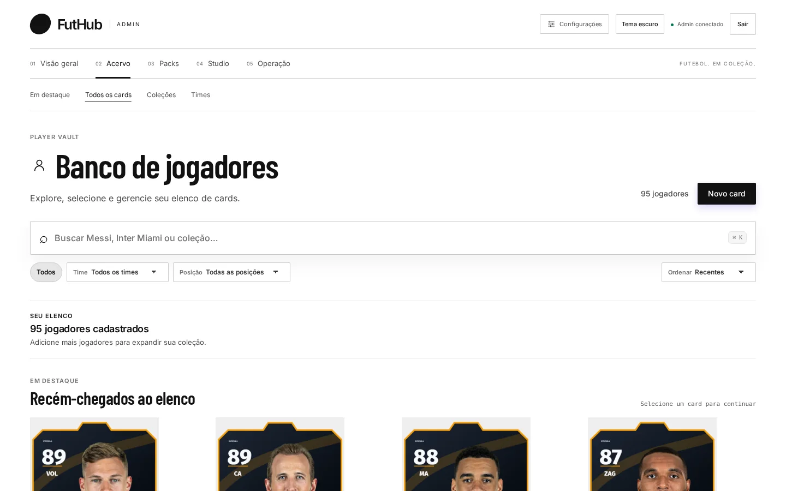

Início / Recursos
Recursos
Tudo que o jogo precisa para rodar.
Cada tela abaixo é uma captura real do painel. Os recursos estão agrupados como no menu do admin: Acervo, Packs, Studio e Operação.
Studio de cards
Monte o card com dados do banco, foto do jogador, paleta e acabamento. Confira como card, Discord, celular ou arte, e exporte o kit de imagens em um clique.
Ver em detalhe →

Studio de packs
Desenhe a embalagem do pack sobre um modelo 3D, com presets, acabamentos e efeitos, e teste a abertura puxando o lacre.
Ver em detalhe →

Acervo e importação
Jogadores, times e coleções num só lugar, com busca, filtros e importação do elenco de um clube inteiro do EA SPORTS FC.
Ver em detalhe →

Gestão de packs
Defina preço, quantidade de cartas, limite por jogador e quais cards podem sair em cada abertura. Pause e reative ofertas sem apagar nada.
Ver em detalhe →

Economia e /lucro
Command Center do bot, intervalo do /lucro e faixas de recompensa com distribuição de chance ao vivo e simulador de sorte.
Ver em detalhe →

Respostas e emojis do bot
Reescreva cada mensagem do bot com variáveis, listas e imagens geradas na hora, e veja a prévia no formato do Discord.
Ver em detalhe →

Assistente IA
Peça em português e o assistente consulta o catálogo, busca elencos reais e propõe criações. Nada é gravado sem a sua confirmação.
Ver em detalhe →

FutHub Admin
Tudo que o jogo precisa, num painel só.
Do elenco real ao card no Discord: importe, desenhe, embale, precifique e publique sem abrir o código nem o banco.